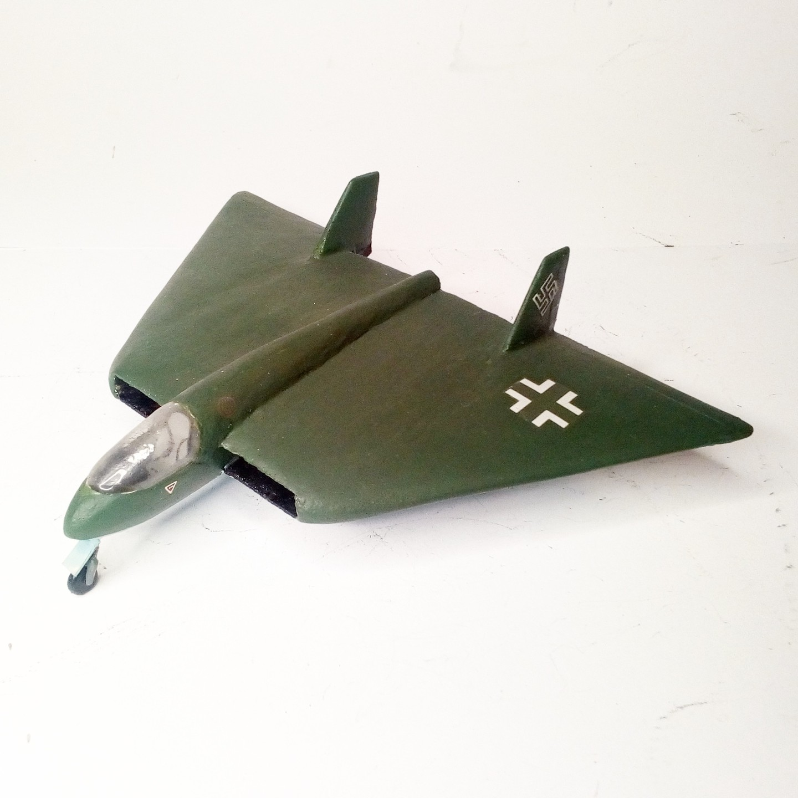
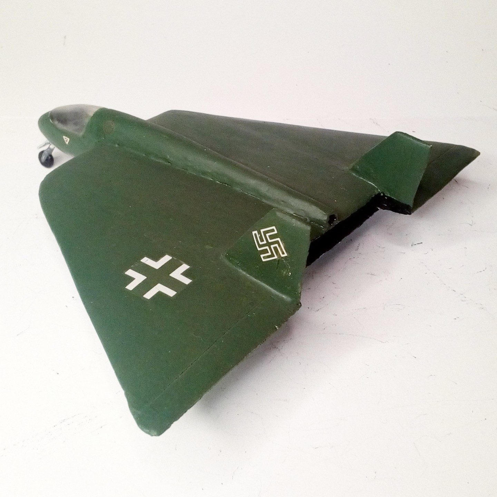

Aerei · scale model archive
Lippisch P13b
Lippisch P13b — Kit: scratchbuilt, Scale: 1/72. Lippisch project for a coal-powered ramjet fighter plane. #1/72 #scratchbuilt #Luft46 #P13b

Photo gallery

English description
Lippisch project for a coal-powered ramjet fighter plane.
#1/72 #scratchbuilt #Luft46 #P13b
Descrizione italiana
Progetto Lippisch per un caccia con statoreattore alimentato a carbone. #1/72 #scratchbuilt #Luft46 #P13b